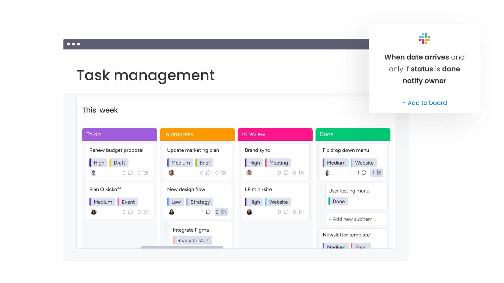

06
Digital Task Managers: Tools to Stay Organized
Digital task managers help keep people organized. These programs can assist with task prioritization and productivity.
What are digital task managers?
Digital task managers represent apps or tools. They help people organize, track as well as manage tasks.
They do the following:
- Task lists are created. Goals are broken into manageable steps.
- Deadlines are set. Reminders and due dates keep people on schedule.
- Tasks are prioritized. Focus is placed on important items.
- Collaboration happens. Teams work together and share updates.
Why are digital task managers used?
A few reasons for use exist:
- Organization is improved. Tasks are kept in one location.
- Productivity is increased. Less time is spent planning - more time is spent doing.
- Stress is reduced. People feel control over their workload.
- Collaboration is better. Tasks also updates are shared.
Popular digital task managers
These are some tools to consider:
- Todoist: A task manager for individuals and teams. It is simple but capable.
- Trello: With boards lists next to cards, Trello allows tasks to be visualized.
- Asana: Good for project management and team collaboration.
- Microsoft To Do: A tool for personal task management. It is direct.
- Notion: A flexible app for tasks, notes in addition to databases.
📸 See Task Managers in Action

A glimpse of how digital task managers can simplify your workflow.